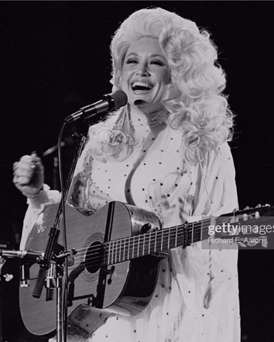
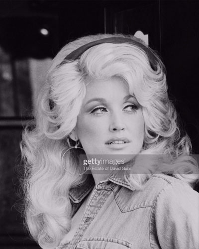
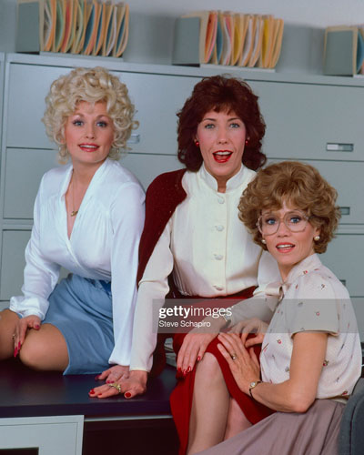

From her award winning song writing, 51 studio albums and her time on the silver screen,
there’s not a lot that Dolly hasn’t done!
Her career has spanned over 65 years and shows no signs of stopping!

Some of her most well know hits include:

Above all else Dolly is a songwriter.
She has written over 6,000 songs!
One of her songs made her millions almost a decade after she had released it herself.
She released ‘I Will Always Love You’ in 1974.
In her documentary, Dolly Parton – Here I Am,
she mentions how Elvis had wanted the rights to the song.
Dolly decided against it.
This would be the best decision she ever made because in 1992,
Whitney Houston recorded her own version which spent 20 weeks at number one and is one of the best-selling singles of all time.
From this alone, Dolly earned $10 million in royalties in the early 1990s and still earning to this day from her writing and publishing rights to the song.

As well as having a successful music career, Dolly has also starred in many movies.
Her acting debut was in the 1980 comedy, ‘9 to 5’.
She played the leading role of Doralee,
a personal assistant to a narcissistic boss. The story follows Doralee and two
co-workers who try to get revenge on their boss!
Dolly Parton only agreed to play the part if she got to write the theme song.
She ended up writing “9 to 5” while on set and her acrylic nails can even be heard
in the song almost like her very own instrument imitating a typewriter!
“9 to 5”
is possibility her biggest hit winning plenty awards including the
Academy Award for Best Original Song.
Other films include:
The Best Little Whorehouse in Texas – 1982
Rhinestone – 1984
Steel Magnolias – 1989